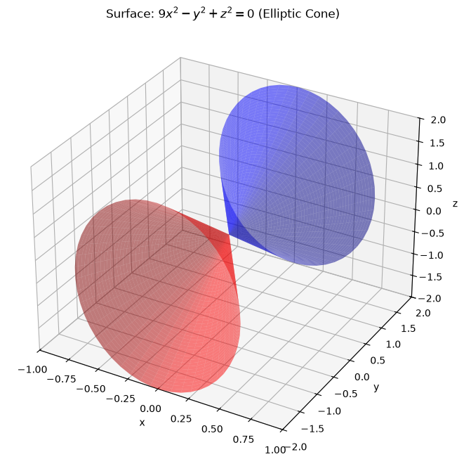
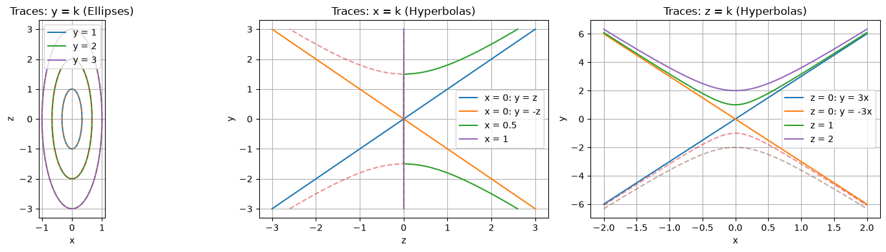
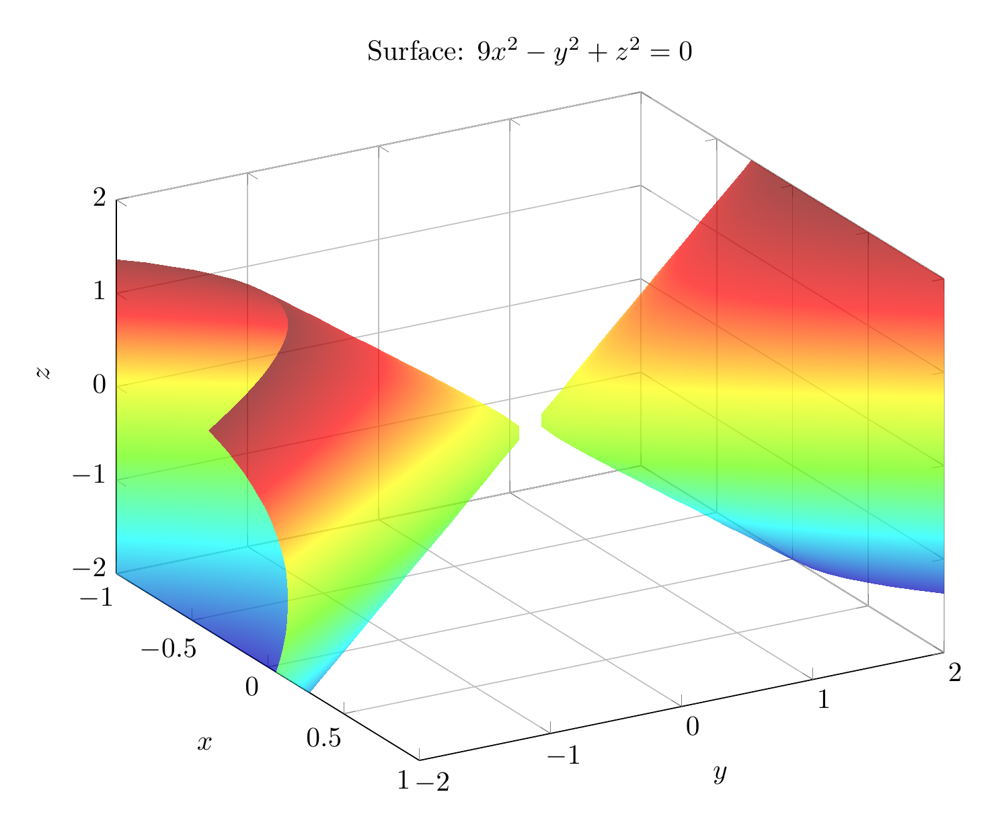
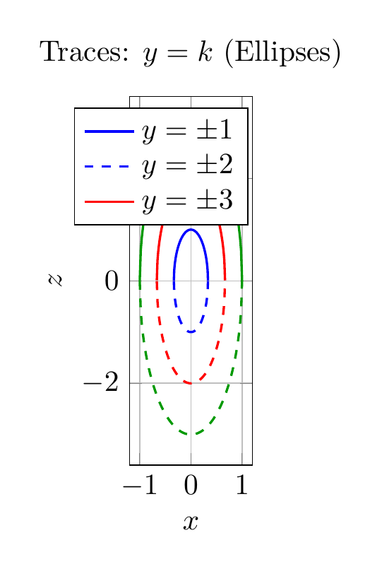

Path: mcma-Qwen3.5-397B-A17B/calculus-12.6.12/chat_20260823_213317_708942_utc_0800
Problem
Please solve the math problem in the image.

End of problem
Answer
# Solution: Identifying the Surface $9x^2 - y^2 + z^2 = 0$
## Step 1: Analyze the Equation
The given equation is:
$$9x^2 - y^2 + z^2 = 0$$
To identify the surface, we rearrange it to match standard quadric surface forms:
$$9x^2 + z^2 = y^2$$
Dividing by appropriate constants to get standard form:
$$\frac{x^2}{(1/3)^2} + \frac{z^2}{1^2} = \frac{y^2}{1^2}$$
This matches the standard form of an **elliptic cone** with axis along the $y$-axis.
## Step 2: Analyze the Traces
### Horizontal Traces ($y = k$):
Setting $y = k$ (constant):
$$9x^2 + z^2 = k^2$$
This is the equation of an **ellipse** in the $xz$-plane with:
- Semi-axis in $x$-direction: $a = |k|/3$
- Semi-axis in $z$-direction: $c = |k|$
For $k = 0$: The trace is a single point $(0, 0, 0)$ (the vertex).
For $k \neq 0$: We get ellipses that grow larger as $|k|$ increases.
### Vertical Traces ($x = k$):
Setting $x = k$ (constant):
$$-y^2 + z^2 = -9k^2 \quad \Rightarrow \quad y^2 - z^2 = 9k^2$$
This is the equation of a **hyperbola** in the $yz$-plane.
- For $k = 0$: We get two intersecting lines $y = \pm z$
- For $k \neq 0$: We get hyperbolas opening along the $y$-axis
### Vertical Traces ($z = k$):
Setting $z = k$ (constant):
$$9x^2 - y^2 = -k^2 \quad \Rightarrow \quad y^2 - 9x^2 = k^2$$
This is the equation of a **hyperbola** in the $xy$-plane.
- For $k = 0$: We get two intersecting lines $y = \pm 3x$
- For $k \neq 0$: We get hyperbolas opening along the $y$-axis
## Step 3: Identify the Surface
Based on the trace analysis:
- Horizontal traces are ellipses (or a point)
- Vertical traces are hyperbolas (or intersecting lines)
This pattern uniquely identifies an **elliptic cone**.
The standard form of an elliptic cone with axis along the $y$-axis is:
$$\frac{x^2}{a^2} + \frac{z^2}{c^2} = \frac{y^2}{b^2}$$
Comparing with our equation $\frac{x^2}{(1/3)^2} + \frac{z^2}{1^2} = \frac{y^2}{1^2}$:
- $a = 1/3$ (semi-axis in $x$-direction)
- $b = 1$ (scaling factor for $y$)
- $c = 1$ (semi-axis in $z$-direction)
## Conclusion
The surface $9x^2 - y^2 + z^2 = 0$ is an **elliptic cone** with:
- **Axis**: $y$-axis
- **Vertex**: Origin $(0, 0, 0)$
- **Cross-sections**: Ellipses in planes perpendicular to the $y$-axis
- **Two nappes**: One for $y \geq 0$ and one for $y \leq 0$
$\boxed{\text{Elliptic Cone}}$
---




\documentclass[border=10pt]{standalone}
\usepackage{pgfplots}
\pgfplotsset{compat=1.18}
\usepgfplotslibrary{colormaps}
\begin{document}
\begin{tikzpicture}
\begin{axis}[
view={60}{30},
xlabel={$x$},
ylabel={$y$},
zlabel={$z$},
title={Surface: $9x^2 - y^2 + z^2 = 0$},
domain=-1:1,
y domain=-2:2,
samples=30,
samples y=30,
colormap/bluered,
grid=major,
width=12cm,
height=10cm,
zmin=-2,
zmax=2,
xmin=-1,
xmax=1,
ymin=-2,
ymax=2
]
% Upper nappe: y = sqrt(9x^2 + z^2)
\addplot3[surf, shader=interp, opacity=0.7, blue]
({x}, {sqrt(9*x^2 + y^2)}, {y});
% Lower nappe: y = -sqrt(9x^2 + z^2)
\addplot3[surf, shader=interp, opacity=0.7, red]
({x}, {-sqrt(9*x^2 + y^2)}, {y});
\end{axis}
\end{tikzpicture}
\end{document}

\documentclass[border=10pt]{standalone}
\usepackage{pgfplots}
\pgfplotsset{compat=1.18}
\begin{document}
\begin{tikzpicture}
\begin{axis}[
xlabel={$x$},
ylabel={$z$},
title={Traces: $y = k$ (Ellipses)},
domain=-1:1,
samples=100,
grid=major,
width=8cm,
height=6cm,
axis equal image,
legend pos=north east
]
% Ellipses for y = 1, 2, 3
% 9x^2 + z^2 = k^2 => z = +/- sqrt(k^2 - 9x^2)
\addplot[blue, thick, domain=-1/3:1/3] {sqrt(1 - 9*x^2)};
\addplot[blue, thick, dashed, domain=-1/3:1/3] {-sqrt(1 - 9*x^2)};
\addlegendentry{$y = \pm 1$}
\addplot[red, thick, domain=-2/3:2/3] {sqrt(4 - 9*x^2)};
\addplot[red, thick, dashed, domain=-2/3:2/3] {-sqrt(4 - 9*x^2)};
\addlegendentry{$y = \pm 2$}
\addplot[green!60!black, thick, domain=-1:1] {sqrt(9 - 9*x^2)};
\addplot[green!60!black, thick, dashed, domain=-1:1] {-sqrt(9 - 9*x^2)};
\addlegendentry{$y = \pm 3$}
\end{axis}
\end{tikzpicture}
\end{document}

End of answer